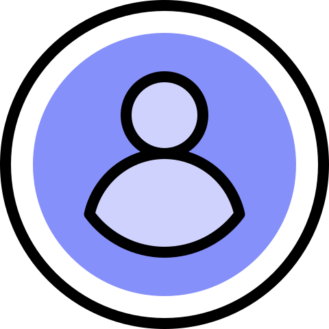

<ion-header>
  <ion-toolbar color="primary">
    <ion-buttons slot="start">
      <ion-menu-button></ion-menu-button>
    </ion-buttons>
    <ion-title>Mi perfil</ion-title>
  </ion-toolbar>
</ion-header>

<ion-content>

  <ion-list>

    <div style="margin-top: 10px;">
      <ion-avatar class="centrar ion-activatable" (click)="cambiarFoto()">
        
        <ion-ripple-effect  type="unbounded"></ion-ripple-effect>
      </ion-avatar>
      
    </div>


  </ion-list>

</ion-content>